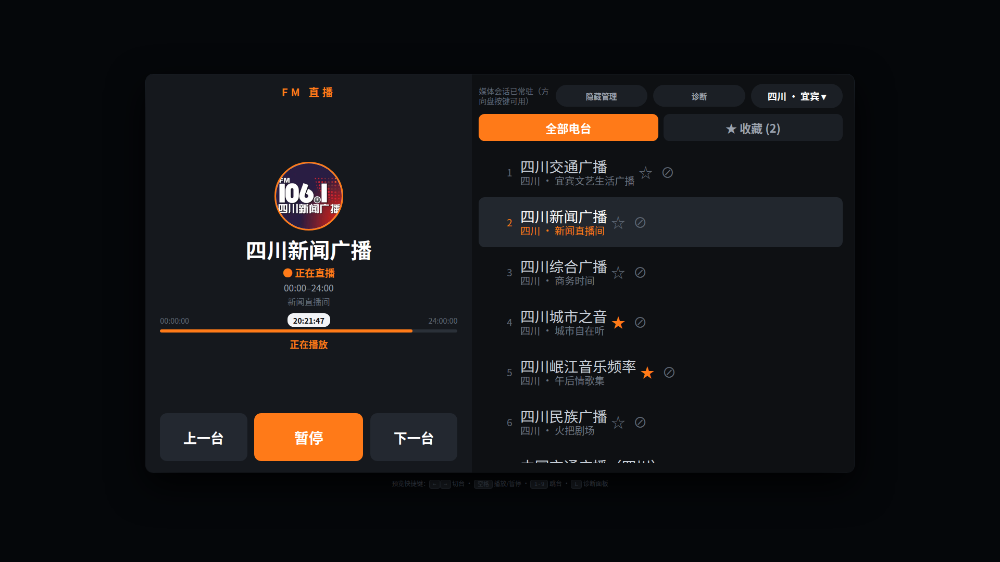
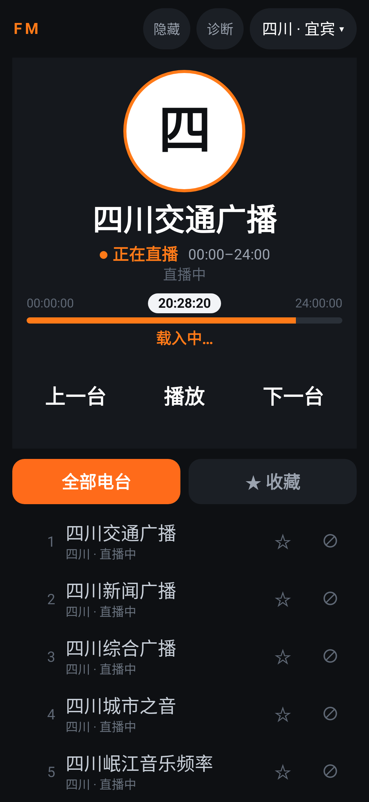

星愿收音机 功能说明书
面向吉利星愿车机（GEELYGEOME E22H / IHU801G，Android 9）自建的纯净网络收音机。 本文说明 它做什么、怎么做的、以及每个设计决定背后的原因。
§摘要
一页看完：这个 App 到底在做什么。
radio.cn 公开接口取台列表与音频地址，地址带签名，本地持久缓存可复用。1这是什么
1.1 一句话定位
1.2 与「云听」的关系
| 对比项 | 云听（原车机自带） | 星愿收音机（本程序） |
|---|---|---|
| 体积 | 30.7 MB（4 个 dex，Kotlin + ARouter + Glide + 定位 SDK） | 76 KB（纯 Java，无第三方库） |
| 内容源 | 考拉FM + 央广云听（多个私有域名） | 仅央广 radio.cn 网页端公开接口 |
| 广告 | 有（assets/adsetting.txt 广告位映射 + 埋点） | 无，代码里没有任何广告/统计组件 |
| 电台范围 | 全品类（音乐、有声书、播客…） | 只做广播直播，34 个省级行政区 + 国家台 |
| 启动行为 | 开屏 + 首页推荐流 | 直接进播放界面，无任何中间页 |
两者数据同源（云听的广播频道底层也走央广接口），但实现完全独立。
2启动流程
从点击图标到出声，中间发生了什么。整个流程不阻塞界面：界面先出来，数据后台加载。
startForegroundService(RadioService)，让 MediaSession 尽快存在——车机媒体中心只在开机时扫描一遍媒体源，晚到就不会被列出。
PlayPrefs 取出：省份、台名、contentId、下标、是否在播、是否「用户手选过省份」、停在哪个标签页。
RadioPlayer 实例，挂上监听。拿到的如果是「已经在放」的播放器，绝不打断。
3数据从哪来
3.1 三个数据源
| 数据 | 来源 | 用途与特点 |
|---|---|---|
| 电台与地址 | 央广 ytmsout.radio.cn公开接口 |
省份列表、某省电台列表、每台的 4 类播放地址（MP3 高/低码率、HLS、Multi）。地址带签名 key，随请求变化。 |
| 所在地区 | ip-api.com→ 备用 myip.ipip.net |
只取省级粒度 + 城市名（仅用于界面显示）。4 秒超时，失败就用默认四川。 |
| 电台台标 | 接口返回的 image 字段 |
央广官方台标图（通常 400×400）。下载后缓存到本地磁盘，断网也能显示。 |
3.2 接口签名（逆向得到的规则）
央广网页端的接口不是裸请求，每个请求都要带 timestamp 与 sign。规则来自 www.radio.cn/pc-portal/js/api.js：
// 1. 参数按键名排序拼成 "k1=v1&k2=v2" // 2. 尾部追加 "×tamp=<毫秒>&key=<前端常量>" // 3. MD5 后转大写成 sign，与 timestamp 一起放进请求头 sign = MD5("categoryId=0&provinceCode=510000" + "×tamp=" + ts + "&key=f0fc4c…").toUpperCase() // 固定请求头 equipmentId: 0000 platformCode: WEB Content-Type: application/json
KEY 是网页前端里的公开常量，不是破解出来的密钥。若服务端轮换，需要同步更新一行常量。
3.3 播放地址为什么需要缓存
接口返回的地址长这样：
http://ytcastmp3.radio.cn/72/stream_10749.mp3?type=1&key=a3f8…（32位十六进制）&time=65f2…（十六进制签发时刻）
实测得出三个关键结论：
| 实验 | 结果 | 推论 |
|---|---|---|
| 同一秒内连续请求多次 | key 完全不变 | key 由「时间片」派生，不是一次性随机串 |
把 time 改 1 秒 | 立刻 403 | 服务端严格校验 key / path / time 三元组 |
| 原样保存的地址放置 32 分钟 | HTTP 200/206 仍可拉流 | 不能长期写死，但可以持久缓存复用 |
所以 StreamCache 采用两级时效：
- 30 分钟内视为新鲜，直接用缓存地址秒开，不等网络；
- 6 小时以上判废，连试都不试，省掉一次超时等待；
- 两者之间：先试缓存，失败自动刷新当前台（只刷这一个台，不整批重来）。
3.4 列表排序规则
四川人优先，是刻意的排序策略：
| 档位 | 判定条件 | 例子 |
|---|---|---|
| 一档 | 台名以省名开头，且不含城市名 | 四川交通广播、四川新闻广播 |
| 二档 | 台名含省名或城市名（排除国家级） | 中国交通广播（四川）、成都经济广播 |
| 三档 | 其余 | 国家台、其它 |
省份下拉框同样排序：四川 → 重庆 → 云南 → 贵州 → 其它。
4怎么播
4.1 播放内核
用系统 MediaPlayer（不引第三方播放器），关键设置：
- 音频用途标为 MEDIA：
USAGE_MEDIA+CONTENT_TYPE_MUSIC，让车机把它当媒体流而不是通知音； - 主动申请音频焦点：来电/导航播报时自动压低或暂停，结束后恢复；
- 持有 WakeLock：后台播放不因熄屏被断；
- 持续上报 PlaybackState：position 用单调时钟推进，车机进度条才不会卡在 0。
4.2 一个台打不开时的降级链
4.3 上下切台的语义
5记忆与恢复
5.1 记了什么
| 字段 | 作用 |
|---|---|
contentId | 电台稳定 ID，主要依据（列表增删也不会错位） |
index | 下标，兜底（万一该台被下架） |
provinceCode / Name | 上次在哪个「文件夹」 |
playing | 退出时是否在播 |
chosenByUser | 省份是手选的，还是定位推出来的 |
showingFavorites | 停在「全部电台」还是「★ 收藏」 |
5.2 为什么要区分「手选」和「定位」
这是个容易踩的坑：如果一律用「上次的省份」恢复，那么车开到别的省也不会自动切换； 如果一律用定位，那么你手动切到「国家台」下次就丢了。
解法是只认「用户意图」：
chosenByUser = true，启动时强制回到那个省，不管你人在哪。5.3 「文件夹 + 电台」必须成对恢复
省份和电台是两个值，必须一起恢复。只恢复一个会出现这种错位：记的是 A 省的台，列表却是 B 省——用户看到的和上次不是一回事，等于没恢复。
另外有个隐藏 bug 已经修掉：列表请求如果被发两遍，第二遍重建队列时「恢复标记」已经被消费掉，会从下标 0 起播、还把「第 0 台」写回偏好，导致次次都跳回第一个台。现在做了请求去重，恢复标记也只消费一次。
6界面与操作

6.1 左侧播放区
| 元素 | 说明 |
|---|---|
| 圆形台标 | 央广官方台标图。方形标裁成圆铺满；横向长条标（如 101.7 FM 组合标）完整显示不切两端。无网无缓存时回落成「台名首字」字标，永不空白。 |
| 台名 | 40sp 粗体，最多两行。 |
| 直播状态 | 「● 正在直播」橙色 /「❚❚ 已暂停」灰色。 |
| 节目时间轴 | 直播没有真实进度，所以用「今天 0 点到现在」的位置表示时间走到哪，配实时时间码。 |
| 三个按钮 | 上一台 / 暂停 / 下一台，高 92dp（车机）或 76dp（手机）。单击即生效。 |
6.2 右侧列表
- 「全部电台 / ★ 收藏」标签切换：一眼看到当前在哪个视图，直接点，不用先展开菜单；
- 每行右侧两个独立按钮：
★收藏、⊘隐藏，与「点行切台」互不干扰； - 当前台自动高亮并跟随：切台时列表只在目标行看不见时才滚动，并留 1~3 行余量，不把当前台贴在屏幕边缘。
6.3 三种操作方式
| 方式 | 操作 | 适用 |
|---|---|---|
| 点按钮 | 点上一台 / 暂停 / 下一台 | 最直接，触屏一点即生效 |
| 滑动 | 播放区上滑或左滑 = 下一台 下滑或右滑 = 上一台 | 开车时不用瞄准按钮。只在上半区生效，不抢按钮点击和列表滚动。 |
| 方向盘 | 上一曲 / 下一曲 / 播放暂停 | 手不离方向盘（需车机把本应用识别为媒体源） |
6.4 隐藏 ≠ 取消收藏
- 收藏（★）：我想常听，进「收藏」标签。
- 隐藏（⊘）：我不想看见，从列表里拿掉，可在「隐藏管理」恢复或一键全部恢复。
隐藏会同步移出播放队列——否则方向盘会切到你看不见的台，像「卡住」了。若所有台都被隐藏，兜底保留原列表，不会白屏。
7手机适配

7.1 为什么不做「一套布局自适应」
车机是 960×540dp 的宽扁屏，适合两栏；手机竖屏只有 360dp 宽，两栏会把 28sp 的台名压成两三个字。硬套自适应只会两边都不好用，所以直接换布局文件。
| 屏幕 | 版面 | 说明 |
|---|---|---|
| 车机 960×540dp | 两栏 | 与原车机版完全一致 |
| 手机竖屏 360~430dp | 单列 | 台名 30sp、台标 119~142dp、行高 62dp |
| 手机横屏 780×360dp | 单列 | 宽扁但高度只有 360dp，两栏塞不下（左栏内容约需 480dp） |
| Carlink 小窗 800×450dp | 单列 | v1.9.4 起按窗口高度判定，小窗高度 450dp < 480dp |
| 横屏大屏 ≥480dp 高 | 两栏 | 保持大字号（车机 960×540、投屏 1422×711） |
| 竖屏平板 800×1280dp | 单列 | 尺寸不收紧，按平板看 |
7.2 判据为什么带「高度」
// 两栏能不能成立：既要宽扁，也要够高（与 layout-h480dp-land/ 逐字对应） useTwoColumn(w, h) = w >= h && h >= 480dp // 尺寸要不要收紧：不是两栏版面、也不是平板，就收紧 compactMetrics(w, h) = !useTwoColumn(w, h) // 手机竖屏/横屏、Carlink 小窗 && min(w, h) < 600dp
7.3 手机上额外做的
- 取消锁横屏：锁死横屏在手机上会强制转 90°，竖着拿没法用。车机固定面板本来就转不了，取消对车机零影响；
- 锁屏 / 通知栏显示台标：手机锁屏媒体控件、通知栏大图、蓝牙车机都读
METADATA_KEY_ART，车机长期亮屏用不到，手机缺了就是灰方块； - 滑动手感调轻：阈值从车机的 90dp 降到 48dp（约屏宽 1/8），拇指轻扫即触发。
8方向盘与媒体会话
8.1 为什么必须「常驻」
最初的版本把 MediaSession 建在 Activity 里，结果一按返回键、一切到导航，会话就 release 了——车机左下角自然看不到「星愿收音机」，方向盘按键也没了目标。现在播放器由前台服务持有：
8.2 按键的三条到达路径
| 路径 | 说明 | 优先级 |
|---|---|---|
| MediaSession 回调 | 标准路径，会话注册了 PendingIntent 指向按键接收器 | 主 |
| MEDIA_BUTTON 广播 | 部分车机直接发广播，接收器兜底解析 keyCode | 备 |
| 通知栏控制 | 通知带上一台/播放暂停/下一台三个动作 | 备 |
按键到来时日志会打一行 [按键] keyCode=… repeat=…。若播放器未就绪，会先拉起服务、丢弃本次按键，下次即可正常工作。
9代码结构
共 17 个 Java 类，约 3,800 行，零第三方运行时依赖。所有类都是包内可见，没有对外 API。
9.1 分层
| 层 | 类 | 职责 |
|---|---|---|
| 界面层 | MainActivity、PhoneLayout、SwipeStationHelper、QueueRow | 只负责显示与交互，不碰网络和播放细节 |
| 播放层 | RadioService、RadioPlayer、StreamCache | 流控制、媒体会话、地址缓存 |
| 数据层 | RadioCnApi、RegionResolver、LogoLoader | 网络请求与解析，全部在子线程 |
| 存储层 | PlayPrefs、FavoriteStore、HiddenStore | 三份独立 SharedPreferences，互不污染 |
9.2 两个刻意的设计
SwipeStationHelper.decide()、QueueRow.scrollTargetFor()、PhoneLayout.useTwoColumn()
都是不依赖 Android 控件的静态方法——可以在 JVM 上直接单测，不需要真机或模拟器。这是这个项目能在没有 USB 调试的条件下还保持可维护的原因。
控件只设 focusable="true"，绝不设 focusableInTouchMode="true"。
后者会让触屏第一次点击只获取焦点、不触发 click，用户必须点两次——这个坑已经用源码级测试锁死。
10异常处理
| 情况 | 行为 |
|---|---|
| IP 定位失败 / 超时 | 回落默认「四川」，不弹错误框打断使用 |
| 省份列表接口挂掉 | 用内置兜底列表（四川 + 国家） |
| 电台列表为空 | 状态栏提示，列表保持空，不崩溃 |
| 播放地址 403 / 过期 | 单台刷新地址 → 重试；仍失败则提示并记录日志 |
| 断网 | 已缓存的地址可继续；台标回落字标；界面不空白 |
| 台标图下载失败 | 回落「台名首字」圆形字标 |
| 服务被系统回收 | START_STICKY 自动重建；按键接收器也会主动拉起 |
| 所有台被隐藏 | 兜底保留原列表，避免白屏无台可选 |
| 收藏视图为空 | 列表区显示引导文案「点列表右侧的 ☆ 添加」 |
| 来电 / 导航播报 | 自动压低或暂停，结束后恢复 |
11验证
没有 USB 调试条件，所以验证主要靠 JVM 上的 Robolectric 真实渲染 + 纯函数单测。
| 验证项 | 方式 | 结果 |
|---|---|---|
| 接口签名算法 | 与网页 JS 逐位比对（带参 / 空参两例） | 通过 |
| 车机界面 1920×1080 渲染 | Robolectric 真实 inflate + 测量 + 截图 | 通过 |
| 手机 1080×2340 / 720×1280 渲染 | 同上，断言按钮与列表都在屏内 | 通过 |
| 切台时列表跟随翻页 | 连按 12 次必须翻页；往回切要跟回来；隐藏后台后行号不错位 | 通过 |
| 按钮单击即生效 | 源码级校验样式里没有 focusableInTouchMode | 通过 |
| 四川 44 个台可播 | scripts/verify_streams.py 实际拉流 | 44/44 |
| 播放地址有效期 | 长测：32 分钟后仍可拉流 | 通过 |
| MediaSession 常驻 | 单测：界面销毁后播放器单例不变 | 通过 |
| 方向盘按键真车 | 需在车上实际按（依赖车机是否把事件派发过来） | 待确认 |
单测总计：103 个全部通过（gradle testDebugUnitTest）。
12边界与限制
12.1 已知限制
| 限制 | 说明 |
|---|---|
| 只用公开接口 | 央广没有官方 SDK 与 SLA，上游改版可能失效。用 verify_streams.py 可快速定位是接口变了还是网络问题。 |
| 签名 KEY 是前端常量 | 若服务端轮换需同步更新；不是破解出的密钥。 |
| 只支持广播直播 | 不支持点播、回听、有声书——定位就是「一台收音机」。 |
| 车机方向盘依赖系统 | 需车机把本应用识别为媒体源。App 侧已就绪，最终取决于车机设置。 |
| 台标版权 | 归各电台所有，只做「按官方地址下载 + 本地缓存展示」，不打包分发、不二次加工。 |
12.2 合规边界
- 音频流版权归各广播电台所有，本应用仅作为播放器访问公开接口，不缓存、不转存、不分发任何音频内容；
- 逆向分析的样本是用户自有车机上已安装的应用，目的为理解车机适配方式 + 重建等价功能；
- 重建产物不含云听 / 考拉FM 的任何代码、图标、私有接口；
- 未绕过任何付费或授权校验（本应用无 DRM 需求）；
- 不采集任何个人信息，IP 只用于判断省份且不上传。
星愿收音机 v1.5.1 · 功能说明书
数据来自央广 radio.cn（与云听同源），只读公开接口